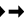

Docs for ‘QGIS testing’. Visit http://docs.qgis.org/2.14 for QGIS 2.14 docs and translations.
GRASS GIS Integration¶
- Demo dataset
- Loading GRASS raster and vector layers
- Importing data into a GRASS LOCATION via drag and drop
- Managing GRASS data in QGIS browser
- GRASS Options
- Starting the GRASS plugin
- Opening GRASS mapset
- GRASS LOCATION and MAPSET
- Importing data into a GRASS LOCATION
- The GRASS vector data model
- Creating a new GRASS vector layer
- Digitizing and editing a GRASS vector layer
- The GRASS region tool
- The GRASS Toolbox
GRASS integration provides access to GRASS GIS databases and functionalities (see GRASS-PROJECT in Literature and Web References). The integration consists of two parts: provider and plugin. The provider allows to browse, manage and visualize GRASS raster and vector layers. The plugin can be used to create new GRASS locations and mapsets, change GRASS region, create and edit vector layers and analyze GRASS 2-D and 3-D data with more than 400 GRASS modules. In this section, we’ll introduce the provider and plugin functionalities and give some examples of managing and working with GRASS data.
The provider supports GRASS version 6 and 7, the plugin supports GRASS 6 and 7 (starting from QGIS 2.12). QGIS distribution may contain provider/plugin for either GRASS 6 or GRASS 7 or for both versions at the same time (binaries have different file names). Only one version of the provider/plugin may be loaded on runtime however.
Demo dataset¶
As an example, we will use the QGIS Alaska dataset (see section Sample Data). It includes a small sample GRASS LOCATION with three vector layers and one raster elevation map. Create a new folder called grassdata, download the QGIS ‘Alaska’ dataset qgis_sample_data.zip from http://download.osgeo.org/qgis/data/ and unzip the file into grassdata.
More sample GRASS LOCATIONs are available at the GRASS website at http://grass.osgeo.org/download/sample-data/.
Loading GRASS raster and vector layers¶
If the provider is loaded in QGIS, the location item with GRASS icon is added in the browser tree under each folder item which contains GRASS location. Go to the folder grassdata and expand location alaska and mapset demo.
You can load GRASS raster and vector layers like any other layer from the browser either by double click on layer item or by dragging and dropping to map canvas or legend.
Tip
GRASS Data Loading
If you don’t see GRASS location item, verify in Help ‣ About ‣ Providers if GRASS vector provider is loaded.
Importing data into a GRASS LOCATION via drag and drop¶
This section gives an example of how to import raster and vector data into a GRASS mapset.
- In QGIS browser navigate to the mapset you want to import data into.
- In QGIS browser find a layer you want to import to GRASS, note that you can open another instance of the browser (Browser Panel (2)) if source data are too far from the mapset in the tree.
- Drag a layer and drop it on the target mapset. The imported may take some time for larger layers, you will see animated icon  in front of new layer item until the import finishes.
Where raster data are in different CRS, they can be reprojected using an Approximate (fast) or Exact (precise) transformation. If a link to the source raster is created (using r.external), the source data are in the same CRS and the format is known to GDAL, the source data CRS will be used. You can set these options in the Browser tab in GRASS Options.
If a source raster has more bands, a new GRASS map is created for each layer with .<band number> suffix and group of all maps with icon is created. External rasters have a different icon .
Managing GRASS data in QGIS browser¶
- Copying maps: GRASS maps may be copied between mapsets within the same location using drag and drop.
- Deleting maps: Right click on a GRASS map and select Delete from context menu.
- Renaming maps: Right click on a GRASS map and select Rename from context menu.
GRASS Options¶
GRASS options may be set in GRASS Options dialog, which can be opened by right clicking on the location or mapset item in the browser and then choosing GRASS Options.
Starting the GRASS plugin¶
To use GRASS functionalities in QGIS, you must select and load the GRASS plugin using the
Plugin Manager. To do this, go to the menu Plugins ‣  Manage and Install Plugins..., select
Manage and Install Plugins..., select  GRASS and click
[OK].
GRASS and click
[OK].
The following main features are provided with the toolbar menu when you start the GRASS plugin:


Opening GRASS mapset¶
A GRASS mapset must be opened to get access to GRASS Tools in the plugin (the tools are disabled if no mapset is open). You can open a mapset from the browser: right click on mapset item and then choose Open mapset from context menu.
GRASS LOCATION and MAPSET¶
GRASS data are stored in a directory referred to as GISDBASE. This directory, often called grassdata, must be created before you start working with the GRASS plugin in QGIS. Within this directory, the GRASS GIS data are organized by projects stored in subdirectories called LOCATIONs. Each LOCATION is defined by its coordinate system, map projection and geographical boundaries. Each LOCATION can have several MAPSETs (subdirectories of the LOCATION) that are used to subdivide the project into different topics or subregions, or as workspaces for individual team members (see Neteler & Mitasova 2008 in Literature and Web References). In order to analyse vector and raster layers with GRASS modules, you generally have to import them into a GRASS LOCATION. (This is not strictly true – with the GRASS modules r.external and v.external you can create read-only links to external GDAL/OGR-supported datasets without importing them. This is not the usual way for beginners to work with GRASS, therefore this functionality will not be described here.)
Figure GRASS location 1:
GRASS data in the alaska LOCATION
Importing data into a GRASS LOCATION¶
See section Importing data into a GRASS LOCATION via drag and drop to find how data can be easily imported by dragging and dropping in the browser.
This section gives an example of how to import raster and vector data into the ‘alaska’ GRASS LOCATION provided by the QGIS ‘Alaska’ dataset in traditional way, using standard GRASS modules. Therefore, we use the landcover raster map landcover.img and the vector GML file lakes.gml from the QGIS ‘Alaska’ dataset (see Sample Data).
- Start QGIS and make sure the GRASS plugin is loaded.
- In the GRASS toolbar, click the Open MAPSET icon to bring up the MAPSET wizard.
- Select as GRASS database the folder grassdata in the QGIS Alaska dataset, as LOCATION ‘alaska’, as MAPSET ‘demo’ and click [OK].
- Now click the
 Open GRASS tools icon. The
GRASS Toolbox (see section The GRASS Toolbox) dialog appears.
Open GRASS tools icon. The
GRASS Toolbox (see section The GRASS Toolbox) dialog appears. - To import the raster map landcover.img, click the module r.in.gdal in the Modules Tree tab. This GRASS module allows you to import GDAL-supported raster files into a GRASS LOCATION. The module dialog for r.in.gdal appears.
- Browse to the folder raster in the QGIS ‘Alaska’ dataset and select the file landcover.img.
- As raster output name, define landcover_grass and click [Run]. In the Output tab, you see the currently running GRASS command r.in.gdal -o input=/path/to/landcover.img output=landcover_grass.
- When it says Successfully finished, click [View output]. The landcover_grass raster layer is now imported into GRASS and will be visualized in the QGIS canvas.
- To import the vector GML file lakes.gml, click the module v.in.ogr in the Modules Tree tab. This GRASS module allows you to import OGR-supported vector files into a GRASS LOCATION. The module dialog for v.in.ogr appears.
- Browse to the folder gml in the QGIS ‘Alaska’ dataset and select the file lakes.gml as OGR file.
- As vector output name, define lakes_grass and click [Run]. You don’t have to care about the other options in this example. In the Output tab you see the currently running GRASS command v.in.ogr -o dsn=/path/to/lakes.gml output=lakes\_grass.
- When it says Succesfully finished, click [View output]. The lakes_grass vector layer is now imported into GRASS and will be visualized in the QGIS canvas.
Creating a new GRASS LOCATION¶
As an example, here is the sample GRASS LOCATION alaska, which is projected in the Albers Equal Area projection using feet as units. This sample GRASS LOCATION alaska will be used for all examples and exercises in the following GRASS-related sections. It is useful to download and install the dataset on your computer (see Sample Data).
- Start QGIS and make sure the GRASS plugin is loaded.
- Visualize the alaska.shp shapefile (see section Loading a layer from a file) from the QGIS Alaska dataset (see Sample Data).
- In the GRASS toolbar, click on the New mapset icon to bring up the MAPSET wizard.
- Select an existing GRASS database (GISDBASE) folder grassdata, or create one for the new LOCATION using a file manager on your computer. Then click [Next].
- We can use this wizard to create a new MAPSET within an existing
LOCATION (see section Adding a new MAPSET) or to create a new
LOCATION altogether. Select
 Create new
location (see figure_grass_location_2).
Create new
location (see figure_grass_location_2). - Enter a name for the LOCATION – we used ‘alaska’ – and click [Next].
- Define the projection by clicking on the radio button
Projection to enable the projection list.
- We are using Albers Equal Area Alaska (feet) projection. Since we happen to know that it is represented by the EPSG ID 2964, we enter it in the search box. (Note: If you want to repeat this process for another LOCATION and projection and haven’t memorized the EPSG ID, click on the CRS Status icon in the lower right-hand corner of the status bar (see section Working with Projections)).
- In Filter, insert 2964 to select the projection.
- Click [Next].
- To define the default region, we have to enter the LOCATION bounds in the north, south, east, and west directions. Here, we simply click on the button [Set current QGIS extent], to apply the extent of the loaded layer alaska.shp as the GRASS default region extent.
- Click [Next].
- We also need to define a MAPSET within our new LOCATION (this is necessary when creating a new LOCATION). You can name it whatever you like - we used ‘demo’. GRASS automatically creates a special MAPSET called PERMANENT, designed to store the core data for the project, its default spatial extent and coordinate system definitions (see Neteler & Mitasova 2008 in Literature and Web References).
- Check out the summary to make sure it’s correct and click [Finish].
- The new LOCATION, ‘alaska’, and two MAPSETs, ‘demo’ and ‘PERMANENT’, are created. The currently opened working set is ‘demo’, as you defined.
- Notice that some of the tools in the GRASS toolbar that were disabled are now enabled.
Figure GRASS location 2:
Creating a new GRASS LOCATION or a new MAPSET in QGIS
If that seemed like a lot of steps, it’s really not all that bad and a very quick way to create a LOCATION. The LOCATION ‘alaska’ is now ready for data import (see section Importing data into a GRASS LOCATION). You can also use the already-existing vector and raster data in the sample GRASS LOCATION ‘alaska’, included in the QGIS ‘Alaska’ dataset Sample Data, and move on to section The GRASS vector data model.
Adding a new MAPSET¶
A user has write access only to a GRASS MAPSET which he or she created. This means that besides access to your own MAPSET, you can read maps in other users’ MAPSETs (and they can read yours), but you can modify or remove only the maps in your own MAPSET.
All MAPSETs include a WIND file that stores the current boundary coordinate values and the currently selected raster resolution (see Neteler & Mitasova 2008 in Literature and Web References, and section The GRASS region tool).
- Start QGIS and make sure the GRASS plugin is loaded.
- In the GRASS toolbar, click on the New mapset icon to bring up the MAPSET wizard.
- Select the GRASS database (GISDBASE) folder grassdata with the LOCATION ‘alaska’, where we want to add a further MAPSET called ‘test’.
- Click [Next].
- We can use this wizard to create a new MAPSET within an existing
LOCATION or to create a new LOCATION altogether. Click on the
radio button Select location
(see figure_grass_location_2) and click [Next].
- Enter the name text for the new MAPSET. Below in the wizard, you see a list of existing MAPSETs and corresponding owners.
- Click [Next], check out the summary to make sure it’s all correct and click [Finish].
The GRASS vector data model¶
It is important to understand the GRASS vector data model prior to digitizing. In general, GRASS uses a topological vector model. This means that areas are not represented as closed polygons, but by one or more boundaries. A boundary between two adjacent areas is digitized only once, and it is shared by both areas. Boundaries must be connected and closed without gaps. An area is identified (and labelled) by the centroid of the area.
Besides boundaries and centroids, a vector map can also contain points and lines. All these geometry elements can be mixed in one vector and will be represented in different so-called ‘layers’ inside one GRASS vector map. So in GRASS, a layer is not a vector or raster map but a level inside a vector layer. This is important to distinguish carefully. (Although it is possible to mix geometry elements, it is unusual and, even in GRASS, only used in special cases such as vector network analysis. Normally, you should prefer to store different geometry elements in different layers.)
It is possible to store several ‘layers’ in one vector dataset. For example, fields, forests and lakes can be stored in one vector. An adjacent forest and lake can share the same boundary, but they have separate attribute tables. It is also possible to attach attributes to boundaries. An example might be the case where the boundary between a lake and a forest is a road, so it can have a different attribute table.
The ‘layer’ of the feature is defined by the ‘layer’ inside GRASS. ‘Layer’ is the number which defines if there is more than one layer inside the dataset (e.g., if the geometry is forest or lake). For now, it can be only a number. In the future, GRASS will also support names as fields in the user interface.
Attributes can be stored inside the GRASS LOCATION as dBase, SQLite3 or in external database tables, for example, PostgreSQL, MySQL, Oracle, etc.
Attributes in database tables are linked to geometry elements using a ‘category’ value.
‘Category’ (key, ID) is an integer attached to geometry primitives, and it is used as the link to one key column in the database table.
Tip
Learning the GRASS Vector Model
The best way to learn the GRASS vector model and its capabilities is to download one of the many GRASS tutorials where the vector model is described more deeply. See http://grass.osgeo.org/documentation/manuals/ for more information, books and tutorials in several languages.
Creating a new GRASS vector layer¶
To create a new GRASS vector layer, select one of following items from mapset context menu in the browser:
- New Point Layer
- New Line Layer
- New Polygon Layer
and enter a name in the dialog. A new vector map will be created and layer will be added to canvas and editing started. Selecting type of the layer does not restrict geometry types which can be digitized in the vector map. In GRASS, it is possible to organize all sorts of geometry types (point, line and polygon) in one vector map. The type is only used to add the layer to the canvas, because QGIS requires a layer to have a specific type.
It is also possible to add layers to existing vector maps selecting one of the items described above from context menu of existing vector map.
In GRASS, it is possible to organize all sorts of geometry types (point, line and area) in one layer, because GRASS uses a topological vector model, so you don’t need to select the geometry type when creating a new GRASS vector. This is different from shapefile creation with QGIS, because shapefiles use the Simple Feature vector model (see section Creating new Vector layers).
Digitizing and editing a GRASS vector layer¶
GRASS vector layers can be digitized using the standard QGIS digitizing tools. There are however some particularities, which you should know about, due to
- GRASS topological model versus QGIS simple feature
- complexity of GRASS model
- multiple layers in single maps
- multiple geometry types in single map
- geometry sharing by multiple features from multiple layers
The particularities are discussed in the following sections.
Save, discard changes, undo, redo
Warning
All the changes done during editing are immediately written to vector map and related attribute tables.
Changes are written after each operation, it is however, possible to do undo/redo or discard all changes when closing editing. If undo or discard changes is used, original state is rewritten in vector map and attribute tables.
There are two main reasons for this behaviour:
- It is the nature of GRASS vectors coming from conviction that user wants to do what he is doing and it is better to have data saved when the work is suddenly interrupted (for example, blackout)
- Necessity for effective editing of topological data is visualized information about topological correctness, such information can only be acquired from GRASS vector map if changes are written to the map.
Toolbar
The ‘Digitizing Toolbar’ has some specific tools when a GRASS layer is edited:


{kind=link}
{kind=link}
{kind=link}
{kind=link}
{kind=link}
{kind=link}
{kind=link}
{kind=link}
{kind=link}
Table GRASS Digitizing 1: GRASS Digitizing Tools
Tip
Digitizing polygons in GRASS
If you want to create a polygon in GRASS, you first digitize the boundary of the polygon. Then you add a centroid (label point) into the closed boundary. The reason for this is that a topological vector model links the attribute information of a polygon always to the centroid and not to the boundary.
Category
Category, often called cat, is sort of ID. The name comes from times when GRASS vectors had only singly attribute “category”. Category is used as a link between geometry and attributes. A single geometry may have multiple categories and thus represent multiple features in different layers. Currently it is possible to assign only one category per layer using QGIS editing tools. New features have automatically assigned new unique category, except boundaries. Boundaries usually only form areas and do not represent linear features, it is however possible to define attributes for a boundary later, for example in different layer.
New categories are always created only in currently being edited layer.
It is not possible to assign more categories to geometry using QGIS editing, such data are properly represented as multiple features, and individual features, even from different layers, may be deleted.
Attributes
Attributes of currently edited layer can only be modified. If the vector map contains more layers, features of other layers will have all attributes set to ‘<not editable (layer #)>’ to warn you that such attribute is not editable. The reason is, that other layers may have and usually have different set of fields while QGIS only supports one fixed set of fields per layer.
If a geometry primitive does not have a category assigned, a new unique category is automatically assigned and new record in attribute table is created when an attribute of that geometry is changed.
Tip
If you want to do bulk update of attributes in table, for example using ‘Field Calculator’ (Field Calculator), and there are features without category which you don’t want to update (typically boundaries), you can filter them out by setting ‘Advanced Filter’ to cat is not null.
Editing style
The topological symbology is essential for effective editing of topological data. When editing starts, a specialized ‘GRASS Edit’ renderer is set on the layer automatically and original renderer is restored when editing is closed. The style may be customized in layer properties ‘Style’ tab. The style can also be stored in project file or in separate file as any other style. If you customize the style, do not change its name, because it is used to reset the style when editing is started again.
Tip
Do not save project file when the layer is edited, the layer would be stored with ‘Edit Style’ which has no meaning if layer is not edited.
The style is based on topological information which is temporarily added to attribute table as field ‘topo_symbol’. The field is automatically removed when editing is closed.
Tip
Do not remove ‘topo_symbol’ field from attribute table, that would make features invisible because the renderer is based on that column.
Snapping
To form an area, vertices of connected boundaries must have exactly the same coordinates. This can be achieved using snapping tool only if canvas and vector map have the same CRS. Otherwise, due conversion from map coordinates to canvas and back, the coordinate may become slightly different due to representation error and CRS transformations.
Tip
Use layer’s CRS also for canvas when editing.
Limitations
Simultaneous editing of multiple layers within the same vector at the same time is not supported. This is mainly due to the impossibility of handling multiple undo stacks for a single data source.

 On Linux and Mac OSX only one GRASS layer can be edited at time. This is
due to a bug in GRASS which does not allow to close database drivers in random order.
This is being solved with GRASS developers.
On Linux and Mac OSX only one GRASS layer can be edited at time. This is
due to a bug in GRASS which does not allow to close database drivers in random order.
This is being solved with GRASS developers.
Tip
GRASS Edit Permissions
You must be the owner of the GRASS MAPSET you want to edit. It is impossible to edit data layers in a MAPSET that is not yours, even if you have write permission.
The GRASS region tool¶
The region definition (setting a spatial working window) in GRASS is important for working with raster layers. Vector analysis is by default not limited to any defined region definitions. But all newly created rasters will have the spatial extension and resolution of the currently defined GRASS region, regardless of their original extension and resolution. The current GRASS region is stored in the $LOCATION/$MAPSET/WIND file, and it defines north, south, east and west bounds, number of columns and rows, horizontal and vertical spatial resolution.
It is possible to switch on and off the visualization of the GRASS region in the QGIS
canvas using the  Display current GRASS region button.
Display current GRASS region button.
The region can be modified in ‘Region’ tab in ‘GRASS Tolls’ dock widget. Type in the new region bounds and resolution, and click [Apply]. If you click on [Select the extent by dragging on canvas] you can select a new region interactively with your mouse on the QGIS canvas dragging a rectangle.
The GRASS module g.region provides a lot more parameters to define an appropriate region extent and resolution for your raster analysis. You can use these parameters with the GRASS Toolbox, described in section The GRASS Toolbox.
The GRASS Toolbox¶
The Open GRASS Tools box provides GRASS module functionalities
to work with data inside a selected GRASS LOCATION and MAPSET.
To use the GRASS Toolbox you need to open a LOCATION and MAPSET
that you have write permission for (usually granted, if you created the MAPSET).
This is necessary, because new raster or vector layers created during analysis
need to be written to the currently selected LOCATION and MAPSET.
Figure GRASS Toolbox 1:
GRASS Toolbox and Module Tree
Working with GRASS modules¶
The GRASS shell inside the GRASS Toolbox provides access to almost all (more than 300) GRASS modules in a command line interface. To offer a more user-friendly working environment, about 200 of the available GRASS modules and functionalities are also provided by graphical dialogs within the GRASS plugin Toolbox.
A complete list of GRASS modules available in the graphical Toolbox in QGIS version 2.14 is available in the GRASS wiki at http://grass.osgeo.org/wiki/GRASS-QGIS_relevant_module_list.
It is also possible to customize the GRASS Toolbox content. This procedure is described in section Customizing the GRASS Toolbox.
As shown in figure_grass_toolbox_1, you can look for the appropriate GRASS module using the thematically grouped Modules Tree or the searchable Modules List tab.
By clicking on a graphical module icon, a new tab will be added to the Toolbox dialog, providing three new sub-tabs: Options, Output and Manual.
Options
The Options tab provides a simplified module dialog where you can usually select a raster or vector layer visualized in the QGIS canvas and enter further module-specific parameters to run the module.
Figure GRASS module 1:
GRASS Toolbox Module Options
The provided module parameters are often not complete to keep the dialog simple. If you want to use further module parameters and flags, you need to start the GRASS shell and run the module in the command line.
A new feature since QGIS 1.8 is the support for a Show Advanced Options button below the simplified module dialog in the Options tab. At the moment, it is only added to the module v.in.ascii as an example of use, but it will probably be part of more or all modules in the GRASS Toolbox in future versions of QGIS. This allows you to use the complete GRASS module options without the need to switch to the GRASS shell.
Output
Figure GRASS module 2:
GRASS Toolbox Module Output
The Output tab provides information about the output status of the module. When you click the [Run] button, the module switches to the Output tab and you see information about the analysis process. If all works well, you will finally see a Successfully finished message.
Manual
Figure GRASS module 3:
GRASS Toolbox Module Manual
The Manual tab shows the HTML help page of the GRASS module. You can use it to check further module parameters and flags or to get a deeper knowledge about the purpose of the module. At the end of each module manual page, you see further links to the Main Help index, the Thematic index and the Full index. These links provide the same information as the module g.manual.
Tip
Display results immediately
If you want to display your calculation results immediately in your map canvas, you can use the ‘View Output’ button at the bottom of the module tab.
GRASS module examples¶
The following examples will demonstrate the power of some of the GRASS modules.
Creating contour lines¶
The first example creates a vector contour map from an elevation raster (DEM). Here, it is assumed that you have the Alaska LOCATION set up as explained in section Importing data into a GRASS LOCATION.
- First, open the location by clicking the Open mapset button and choosing the Alaska location.
- Now open the Toolbox with the Open GRASS tools button.
- In the list of tool categories, double-click Raster ‣ Surface Management ‣ Generate vector contour lines.
- Now a single click on the tool r.contour will open the tool dialog as explained above (see Working with GRASS modules).
- In the Name of input raster map enter gtopo30.
- Type into the Increment between Contour levels
 the value 100. (This will create contour lines at intervals of 100 meters.)
the value 100. (This will create contour lines at intervals of 100 meters.) - Type into the Name for output vector map the name ctour_100.
- Click [Run] to start the process. Wait for several moments until the message Successfully finished appears in the output window. Then click [View Output] and [Close].
Since this is a large region, it will take a while to display. After it finishes rendering, you can open the layer properties window to change the line color so that the contours appear clearly over the elevation raster, as in The Vector Properties Dialog.
Next, zoom in to a small, mountainous area in the center of Alaska. Zooming in close, you will notice that the contours have sharp corners. GRASS offers the v.generalize tool to slightly alter vector maps while keeping their overall shape. The tool uses several different algorithms with different purposes. Some of the algorithms (i.e., Douglas Peuker and Vertex Reduction) simplify the line by removing some of the vertices. The resulting vector will load faster. This process is useful when you have a highly detailed vector, but you are creating a very small-scale map, so the detail is unnecessary.
Tip
The simplify tool
Note that the QGIS fTools plugin has a Simplify geometries ‣ tool that works just like the GRASS v.generalize Douglas-Peuker algorithm.
However, the purpose of this example is different. The contour lines created by r.contour have sharp angles that should be smoothed. Among the v.generalize algorithms, there is Chaiken’s, which does just that (also Hermite splines). Be aware that these algorithms can add additional vertices to the vector, causing it to load even more slowly.
- Open the GRASS Toolbox and double-click the categories Vector ‣ Develop map ‣ Generalization, then click on the v.generalize module to open its options window.
- Check that the ‘ctour_100’ vector appears as the Name of input vector.
- From the list of algorithms, choose Chaiken’s. Leave all other options at their default, and scroll down to the last row to enter in the field Name for output vector map ‘ctour_100_smooth’, and click [Run].
- The process takes several moments. Once Successfully finished appears in the output windows, click [View output] and then [Close].
- You may change the color of the vector to display it clearly on the raster background and to contrast with the original contour lines. You will notice that the new contour lines have smoother corners than the original while staying faithful to the original overall shape.
Figure GRASS module 4:
{kind=link}
GRASS module v.generalize to smooth a vector map
Tip
Other uses for r.contour
The procedure described above can be used in other equivalent situations. If you have a raster map of precipitation data, for example, then the same method will be used to create a vector map of isohyetal (constant rainfall) lines.
Creating a Hillshade 3-D effect¶
Several methods are used to display elevation layers and give a 3-D effect to maps. The use of contour lines, as shown above, is one popular method often chosen to produce topographic maps. Another way to display a 3-D effect is by hillshading. The hillshade effect is created from a DEM (elevation) raster by first calculating the slope and aspect of each cell, then simulating the sun’s position in the sky and giving a reflectance value to each cell. Thus, you get sun-facing slopes lighted; the slopes facing away from the sun (in shadow) are darkened.
- Begin this example by loading the gtopo30 elevation raster. Start the GRASS Toolbox, and under the Raster category, double-click to open Spatial analysis ‣ Terrain analysis.
- Then click r.shaded.relief to open the module.
- Change the azimuth angle 270 to 315.
- Enter gtopo30_shade for the new hillshade raster, and click [Run].
- When the process completes, add the hillshade raster to the map. You should see it displayed in grayscale.
- To view both the hillshading and the colors of the gtopo30 together, move the hillshade map below the gtopo30 map in the table of contents, then open the Properties window of gtopo30, switch to the Transparency tab and set its transparency level to about 25%.
You should now have the gtopo30 elevation with its colormap and transparency setting displayed above the grayscale hillshade map. In order to see the visual effects of the hillshading, turn off the gtopo30_shade map, then turn it back on.
Using the GRASS shell
The GRASS plugin in QGIS is designed for users who are new to GRASS and not familiar with all the modules and options. As such, some modules in the Toolbox do not show all the options available, and some modules do not appear at all. The GRASS shell (or console) gives the user access to those additional GRASS modules that do not appear in the Toolbox tree, and also to some additional options to the modules that are in the Toolbox with the simplest default parameters. This example demonstrates the use of an additional option in the r.shaded.relief module that was shown above.
Figure GRASS module 5:
The GRASS shell, r.shaded.relief module
The module r.shaded.relief can take a parameter zmult, which multiplies the elevation values relative to the X-Y coordinate units so that the hillshade effect is even more pronounced.
- Load the gtopo30 elevation raster as above, then start the GRASS Toolbox and click on the GRASS shell. In the shell window, type the command r.shaded.relief map=gtopo30 shade=gtopo30_shade2 azimuth=315 zmult=3 and press [Enter].
- After the process finishes, shift to the Browse tab and double-click on the new gtopo30_shade2 raster to display it in QGIS.
- As explained above, move the shaded relief raster below the gtopo30 raster in the table of contents, then check the transparency of the colored gtopo30 layer. You should see that the 3-D effect stands out more strongly compared with the first shaded relief map.
Figure GRASS module 6:
{kind=link}
Displaying shaded relief created with the GRASS module r.shaded.relief
Raster statistics in a vector map¶
The next example shows how a GRASS module can aggregate raster data and add columns of statistics for each polygon in a vector map.
- Again using the Alaska data, refer to Importing data into a GRASS LOCATION to import the trees shapefile from the shapefiles directory into GRASS.
- Now an intermediate step is required: centroids must be added to the imported trees map to make it a complete GRASS area vector (including both boundaries and centroids).
- From the Toolbox, choose Vector ‣ Manage features, and open the module v.centroids.
- Enter as the output vector map ‘forest_areas’ and run the module.
- Now load the forest_areas vector and display the types of forests - deciduous,
evergreen, mixed - in different colors: In the layer Properties
window, Symbology tab, choose from Legend type
 ‘Unique value’ and set the Classification field
to ‘VEGDESC’. (Refer to the explanation of the symbology tab in
Style Menu of the vector section.)
‘Unique value’ and set the Classification field
to ‘VEGDESC’. (Refer to the explanation of the symbology tab in
Style Menu of the vector section.) - Next, reopen the GRASS Toolbox and open Vector ‣ Vector update by other maps.
- Click on the v.rast.stats module. Enter gtopo30 and forest_areas.
- Only one additional parameter is needed: Enter column prefix elev, and click [Run]. This is a computationally heavy operation, which will run for a long time (probably up to two hours).
- Finally, open the forest_areas attribute table, and verify that several new columns have been added, including elev_min, elev_max, elev_mean, etc., for each forest polygon.
Customizing the GRASS Toolbox¶
Nearly all GRASS modules can be added to the GRASS Toolbox. An XML interface is provided to parse the pretty simple XML files that configure the modules’ appearance and parameters inside the Toolbox.
A sample XML file for generating the module v.buffer (v.buffer.qgm) looks like this:
<?xml version="1.0" encoding="UTF-8"?>
<!DOCTYPE qgisgrassmodule SYSTEM "http://mrcc.com/qgisgrassmodule.dtd">
<qgisgrassmodule label="Vector buffer" module="v.buffer">
<option key="input" typeoption="type" layeroption="layer" />
<option key="buffer"/>
<option key="output" />
</qgisgrassmodule>
The parser reads this definition and creates a new tab inside the Toolbox when you select the module. A more detailed description for adding new modules, changing a module’s group, etc., can be found on the QGIS wiki at http://hub.qgis.org/projects/quantum-gis/wiki/Adding_New_Tools_to_the_GRASS_Toolbox.